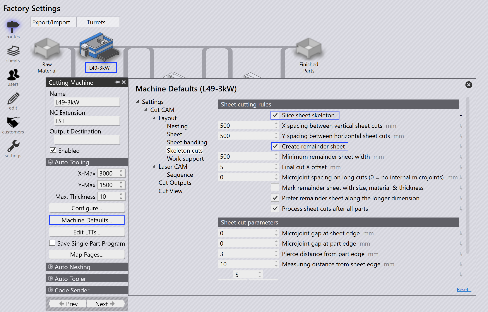
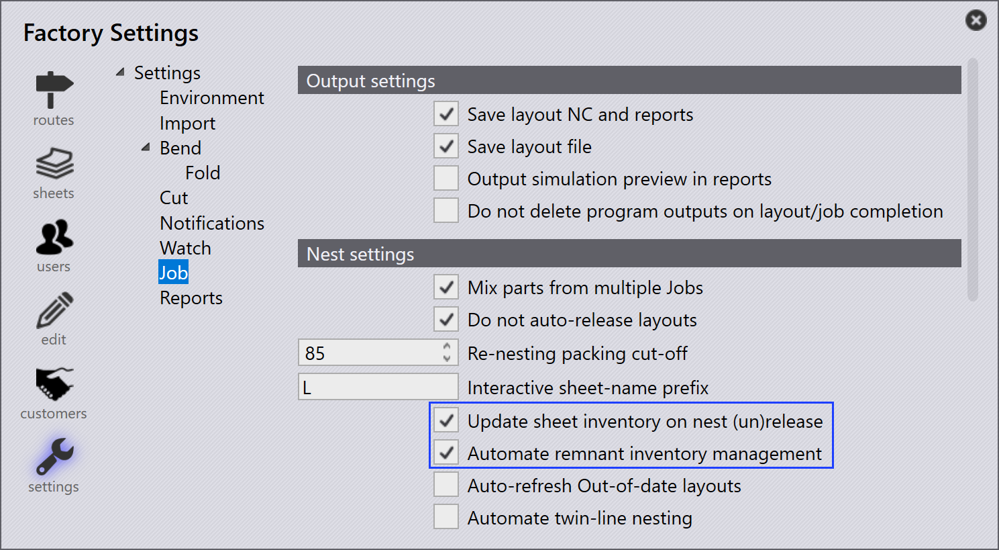

自動餘料管理
啟用餘料
TruSmartCAM 支援在排版期間從佈局自動建立餘料板材。 此功能僅適用於 TecZone Laser 機器。
-
點擊 工廠 → 機台 → 機台預配置… → Skeleton cuts。
-
選擇 Slice Sheet Skeleton 和 Create Remainder Sheet 選項以啟用 此功能。
啟用時，排版板材的剩餘區域會根據分配的 X 和 Y 的最小餘料板材值被切分為餘料 板材。

配置自動餘料
-
點擊 工廠 → 設定 → 套裁。
-
選擇 更新排樣（取消）發佈時的板材庫存 和 自動化剩餘庫存管理。

自動餘料
當您排版零件時，如果剩餘板材區域符合最小板材值 X 和 Y，TruSmartCAM 會自動從剩餘空間建立餘料板材。
-
在工作排版檢視中，具有餘料板材的排版會以綠色 邊框輪廓和灰色背景顯示。

-
雙擊排版以開啟排版詳細資訊頁面。餘料板材資訊 顯示餘料板材尺寸、數量和面積。

-
右鍵點擊排版並選擇 Edit 以在 TecZone 中開啟它。排版顯示 零件間的切片線和骨架切片線，以及雕刻的餘料 尺寸。（材料、厚度和餘料尺寸）。
餘料尺寸雕刻標記幫助操作員不用測量就可以挑選板材，使其在未來的排版中更容易使用。

當您點擊 標記完成… 時，餘料板材會 顯示綠色勾選標記，表示排版已完成。部分陰影的方形圖示表示餘料板材已建立並 在板材庫存中更新。

板材資料庫會以餘料板材的尺寸和數量進行更新，該板材以板材尺寸末尾的星號（*）符號識別。餘料 板材具有綠色邊框。

工作的自動規劃或互動式規劃會將餘料板材視為排版計劃中的高 優先順序，確保它們首先被使用，以保持工廠現場 無未使用的餘料。